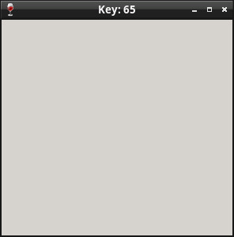

參考資訊：
http://www.winprog.org/tutorial/
http://winapi.freetechsecrets.com/win32/
https://github.com/gammasoft71/Examples_Win32
http://masm32.com/board/index.php?topic=3584.0
https://learn.microsoft.com/en-us/windows/win32/winmsg/window-styles
WM_KEYDOWN、WM_KEYUP是一般鍵盤按鍵事件，而WM_SYSKEYDOWN、WM_SYSKEYUP則是屬於系統按鍵的事件，系統按鍵就是左上角小視窗圖案的那些按鍵命令
WM_KEYDOWN、WM_KEYUP
nVirtKey = (int) wParam; // virtual-key code lKeyData = lParam; // key data
WM_SYSKEYDOWN、WM_SYSKEYUP
nVirtKey = (int) wParam; // virtual-key code lKeyData = lParam; // key data
main.c
.include "head.inc"
.text
WndProc:
push { lr }
cmp r1, #WM_KEYDOWN
beq handle_keydown
cmp r1, #WM_SYSKEYDOWN
beq handle_keydown
cmp r1, #WM_CLOSE
beq handle_close
cmp r1, #WM_DESTROY
beq handle_destroy
b handle_default
handle_keydown:
push { r0 }
ldr r1, =FMT_KBD
ldr r0, =pBuf
bl sprintf
ldr r1, =pBuf
pop { r0 }
bl SetWindowTextA
eor r0, r0
b finish
handle_close:
bl DestroyWindow
eor r0, r0
b finish
handle_destroy:
ldr r0, =0
bl PostQuitMessage
eor r0, r0
b finish
handle_default:
push { r3 }
mov r3, r2
mov r2, r1
mov r1, r0
ldr r0, =pDefWndProc
ldr r0, [r0]
bl CallWindowProcA
add sp, sp, #4
b finish
finish:
pop { pc }
WinMain:
push { lr }
ldr r3, =0
ldr r2, =0
ldr r1, =0
ldr r0, =0
push { r0, r1, r2, r3 }
ldr r3, =300
ldr r2, =300
ldr r1, =0
ldr r0, =0
push { r0, r1, r2, r3 }
ldr r3, =WS_OVERLAPPEDWINDOW | WS_VISIBLE
ldr r2, =szAppName
ldr r1, =WC_DIALOG
ldr r0, =WS_EX_LEFT
bl CreateWindowExA
add sp, sp, #32
ldr r1, =hWin
str r0, [r1]
ldr r2, =WndProc
ldr r1, =GWL_WNDPROC
bl SetWindowLongA
ldr r1, =pDefWndProc
str r0, [r1]
loop:
ldr r3, =0
ldr r2, =0
ldr r1, =0
ldr r0, =szMsg
bl GetMessageA
cmp r0, #0
beq exit
ldr r0, =szMsg
bl DispatchMessageA
b loop
exit:
mov r0, #0
bl ExitProcess
pop { pc }
Line 17~24：將按鍵數值顯示在視窗標題
編譯、執行
$ winegcc main.c -o main $ wine ./main.exe
